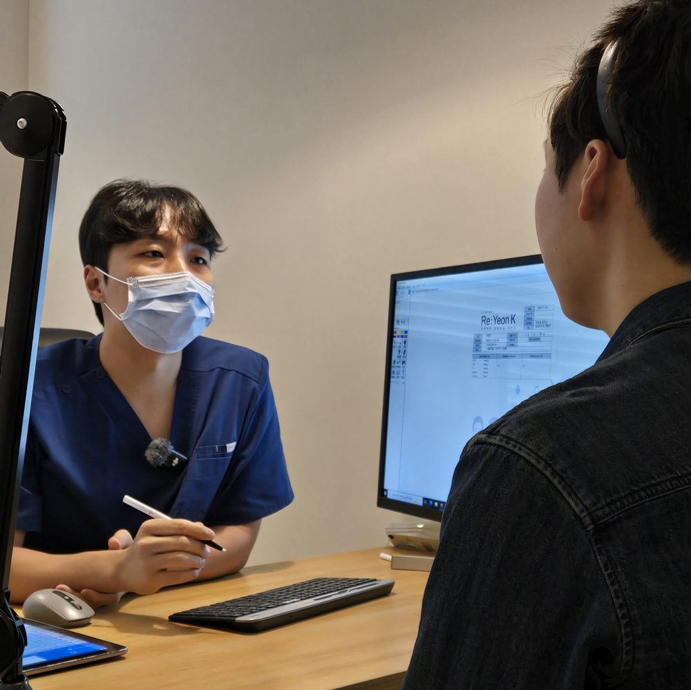

随着皮肤弹力下降、细纹增多，您是否正在考虑射频紧致？
除了热玛吉 FLX，第二代 Density Noir、SERF 等多种射频紧致设备相继问世，很多人不知道该如何选择。同样是射频紧致，究竟有什么不同？

崔贤浩院长
亲切、细致、真诚
亲自负责激光与美容施术，从咨询到施术全程由本人完成。以亲切细致的诊疗态度，真诚对待每一位客人。
- 大韩激光皮肤毛发学会 正式会员
- 大韩美容整形激光医学会 正式会员
- 大韩肥胖美容学会 正式会员
- 大韩填充剂学会 准会员
丽妍K医院实行一对一专属医生制度。由负责的医疗团队从咨询、施术到收尾全程负责。
自2009年开业以来，凭借17年以上的紧致经验，您可以体验到属于自己的那一点不同。
Density Noir、热玛吉 FLX、SERF 有什么区别？
三种施术都是利用射频的射频紧致，向皮肤组织传递热刺激，诱导胶原蛋白再生。
| Density Noir | 热玛吉 FLX | SERF | |
|---|---|---|---|
| 射频方式 | 单极＋双极组合 | 单极 | 双频率单极 |
| 频率 | 单极、双极两种射频 | 6.78MHz | 6.78MHz＋2MHz |
| 特点 | 在原有 Density 基础上升级的设备，具备 Gentle 模式和 Infinite 模式 | 获得 FDA 批准，20 年以上安全性与效果经过验证的元祖射频紧致 | 同时使用两种频率 |
| 共同原理 | 以射频能量向皮肤组织传递热刺激，诱导胶原蛋白再生 | ||
由于能量传递方式不同，建议结合皮肤厚度、弹力下降程度和施术目的来选择。
Density Noir、热玛吉、SERF 哪个更有效？
并没有一种设备对所有人都最有效。
适合的能量设置和施术部位，会因皮肤厚度、面部脂肪量、细纹和松弛程度而不同。除了设备种类之外，医疗团队的皮肤诊断和施术设计同样重要。
Density Noir·热玛吉·SERF 的 600 发效果相同吗？
即使同样是 600 发，各设备的探头面积、能量传递方式和输出设置也不同，并不意味着效果相同。
向下颌线、面颊、法令纹周围等哪个部位传递多少能量，也同样重要。
哪种射频紧致最不疼？
各设备的冷却系统和能量传递方式有所不同。
不过疼痛会因个人敏感度、施术部位和能量强度而异。如果担心疼痛，建议咨询时确认麻醉方式以及能否调节能量。
射频紧致的效果能维持多久？
有些人在施术后立刻就能感受到弹力变化，但胶原蛋白再生带来的变化可能在数周到数月内逐渐显现。
维持时间和合适的再次施术时间，会因皮肤状态、生活习惯和衰老进程而不同。
面部脂肪较少也可以做射频紧致吗？
射频紧致不会影响脂肪，因此对面颊凹陷等副作用的担心较少。
不过，面部脂肪较少或面颊凹陷的人，需要更加细致的施术设计。
施术前确认皮肤厚度和脂肪分布，并按部位调节能量强度和照射范围十分重要。
超声刀和射频紧致可以一起做吗？
超声刀利用聚焦超声波，热玛吉、Density Noir、SERF 则利用射频能量。
根据皮肤状态，可以考虑并用不同能量的施术。但并不是所有人都需要联合施术。
比设备更应先确认的事
- 皮肤厚度和弹力下降程度
- 面部脂肪量和是否有面颊凹陷
- 各部位的发数分配和能量设置
- 医疗团队的直接咨询和施术设计
- 疼痛管理和是否使用正品探头
Density 到院体验分享
这是在丽妍K医院接受 Density 施术的客人的体验分享（译自韩语）。施术效果和满意度因人而异。


Density 怎么这么疼啊 TTT 不过效果很好。大概 2 周后能感觉到。
我个人觉得和超声刀有点像？紧致方面超声刀更好一些，但如果同时想改善细纹等综合问题，Density Alpha 应该更合适！
Density Alpha 施术后到院体验分享


随着时间推移，法令纹淡了，脸部轮廓好像也变得清晰了？真的很惊喜。是我做过的紧致激光中满意度最高的。
施术后皮肤也感觉变好了，打算 6 个月后再做一次。
Density Alpha 施术后到院体验分享
体验分享为个人感受，施术效果和满意度因人而异。
预约制与多语言服务
本院采用预约制，无需等待即可接受咨询和治疗。
设有中文、日语、英语咨询专员及协调人员，您可以无障碍地咨询。
丽妍K医院是经登记的外国人患者接收医疗机构（登记编号 M-2022-01-08-6785）。
常见问题
-
Density Noir、热玛吉、SERF 有什么区别？
三种施术都是以射频能量向皮肤组织传递热刺激，诱导胶原蛋白再生。热玛吉 FLX 是 6.78MHz 单极，Density Noir Alpha 是单极与双极组合，SERF 是 6.78MHz 与 2MHz 的双频率单极，能量传递方式各不相同。
-
Density Noir、热玛吉、SERF 哪个更有效？
并没有一种设备对所有人都最有效。适合的能量设置和施术部位会因皮肤厚度、面部脂肪量、细纹和松弛程度而不同，因此除了设备种类，医疗团队的皮肤诊断和施术设计同样重要。
-
Density Noir·热玛吉·SERF 的 600 发效果相同吗？
即使同样是 600 发，各设备的探头面积、能量传递方式和输出设置也不同，并不意味着效果相同。向下颌线、面颊、法令纹周围等哪个部位传递多少能量，也同样重要。
-
哪种射频紧致最不疼？
各设备的冷却系统和能量传递方式有所不同，但疼痛会因个人敏感度、施术部位和能量强度而异。如果担心疼痛，建议咨询时确认麻醉方式以及能否调节能量。
-
射频紧致的效果能维持多久？
有些人在施术后立刻就能感受到弹力变化，但胶原蛋白再生带来的变化可能在数周到数月内逐渐显现。维持时间和合适的再次施术时间，会因皮肤状态、生活习惯和衰老进程而不同。
-
面部脂肪较少也可以做射频紧致吗？
射频紧致不会影响脂肪，因此对面颊凹陷等副作用的担心较少。不过，面部脂肪较少或面颊凹陷的人需要更加细致的施术设计，施术前应确认皮肤厚度和脂肪分布，并按部位调节能量强度和照射范围。
-
超声刀和射频紧致可以一起做吗？
超声刀利用聚焦超声波，热玛吉、Density Noir、SERF 则利用射频能量。根据皮肤状态，可以考虑并用不同能量的施术，但并不是所有人都需要联合施术。
-
Density Noir、热玛吉、SERF 的区别是什么？
三者都通过射频诱导胶原蛋白再生，但能量传递方式不同。热玛吉 FLX 是 6.78MHz 单极，Density Noir Alpha 是单极与双极组合，SERF 是 6.78MHz 与 2MHz 的双频率单极。
-
Density Noir 和热玛吉哪个更有效？
很难说哪一个对所有人都更有效。适合的设备和设置会因皮肤厚度、松弛程度、是否有细纹而不同，因此应首先由医疗团队进行诊断。
-
热玛吉和 SERF 哪个更好？
两种设备的频率构成和能量传递方式不同。建议综合考虑施术目的、皮肤状态和疼痛敏感度，在咨询后再做选择。
-
Density Noir 和 SERF 的紧致有什么区别？
Density Noir Alpha 是单极与双极组合，SERF 是 6.78MHz 与 2MHz 的双频率单极。由于能量传递方式不同，施术设计也可能不同。
-
射频紧致中，哪种施术对改善皮肤弹力比较好？
如果以改善皮肤弹力为目的，热玛吉、Density Noir、SERF 都可以考虑。适合的设备和发数分配会因皮肤厚度和弹力下降程度而不同。
-
可以用 Density Noir 或 SERF 代替热玛吉吗？
由于各设备的能量传递方式不同，很难把它们看作简单的替代关系。建议在确认目前的皮肤状态和施术目的后，再选择合适的设备。
-
Density Noir、热玛吉、SERF 的 600 发价格有什么差异？
价格会因设备、探头种类、发数和正在进行的活动而不同。具体费用将在咨询时，结合适合您皮肤状态的施术方案一并告知。
-
性价比高的射频紧致是哪种？
比起只看价格，更重要的是所需能量和发数分配是否适合您的皮肤。与其选择超出需要的发数或施术，不如通过咨询来制定方案。
-
热玛吉为什么比 Density Noir 贵？
热玛吉 FLX 是 20 年以上安全性与效果经过验证的元祖射频紧致设备，正品探头费用等会反映在施术价格中。实际费用因医院和施术内容而异。
-
Density Noir、热玛吉、SERF 中哪种施术最不疼？
疼痛不仅取决于设备，还会因个人敏感度、施术部位和能量强度而异，很难只选出一种。请在咨询时确认麻醉方式以及能否调节能量。
-
有不需要睡眠麻醉也能做的射频紧致吗？
射频紧致多通过表面麻醉膏等局部麻醉和能量调节来进行。是否需要睡眠麻醉以及麻醉方式，会根据疼痛敏感度在咨询时决定。
-
Density Noir、热玛吉、SERF 的效果能维持多久？
胶原蛋白再生带来的变化会在数周到数月内逐渐显现，维持时间因皮肤状态、生活习惯和衰老进程而有个体差异。
-
射频紧致的效果什么时候开始显现？
有些人在施术后立刻就能感受到弹力变化，但胶原蛋白再生带来的变化可能在数周到数月内逐渐显现。存在个体差异。
-
射频紧致一年要做几次？
没有固定次数，合适的再次施术时间会因皮肤状态、生活习惯和衰老进程而不同。建议与医疗团队商量后确定间隔。
-
面部脂肪较少的人适合哪种射频紧致？
比起特定设备，施术设计更重要。施术前应确认皮肤厚度和脂肪分布，并按部位调节能量强度和照射范围。
-
皮肤较薄的人应该做哪种紧致？
皮肤越薄，越需要更细致地调节能量设置和施术范围。建议直接确认皮肤厚度后，再决定是否施术及施术方法。
-
哪种射频紧致对面颊凹陷的担心较少？
射频紧致不会影响脂肪，因此对面颊凹陷等副作用的担心较少。不过，面部脂肪较少或面颊凹陷的人，需要在咨询时确认脂肪分布，并按部位调节发数分配和能量设置的施术设计。
-
改善法令纹，Density Noir、热玛吉、SERF 哪个好？
法令纹的成因有松弛、脂肪分布、皮肤厚度等多种，无法由某一种设备来决定。重要的是在诊断后，设计法令纹周围所需的能量和发数分配。
-
改善毛孔和细纹，哪种射频紧致比较好？
毛孔和细纹也会因皮肤状态而采用不同的方法，射频紧致可通过胶原蛋白再生用于皮肤弹力和肤质管理。适合目的的设备和设置，将在咨询后确定。
懂你的丽妍K。
丽妍K医院由医疗团队直接确认皮肤状态，并针对每位客人的烦恼提出合适的紧致方案。比起一味选择更多的发数或施术，更重要的是确认自己的脸真正需要什么。
※ 施术效果和维持时间因人而异，可能出现发红、肿胀、疼痛、灼伤、脂肪萎缩等副作用。
- 丽妍K医院（Reyeonk Clinic）
- 首尔特别市江南区彦州路172街64号 Reyeonk大楼
B1·3F·4F - 电话
- +82-2-558-5581
- KakaoTalk
- 一对一咨询
- 官方网站
- reyeonk.co.kr （韩语）
- 诊疗时间
- 周一、周二、周四 10:00–20:00
周五 10:00–19:00
周六 10:00–15:00
周三、周日及公共假日休诊 - 交通
- 查看交通指南
※ 本文以提供一般信息为目的。施术效果和结果因人而异。是否诊断和施术，请通过与医疗团队的咨询来决定。